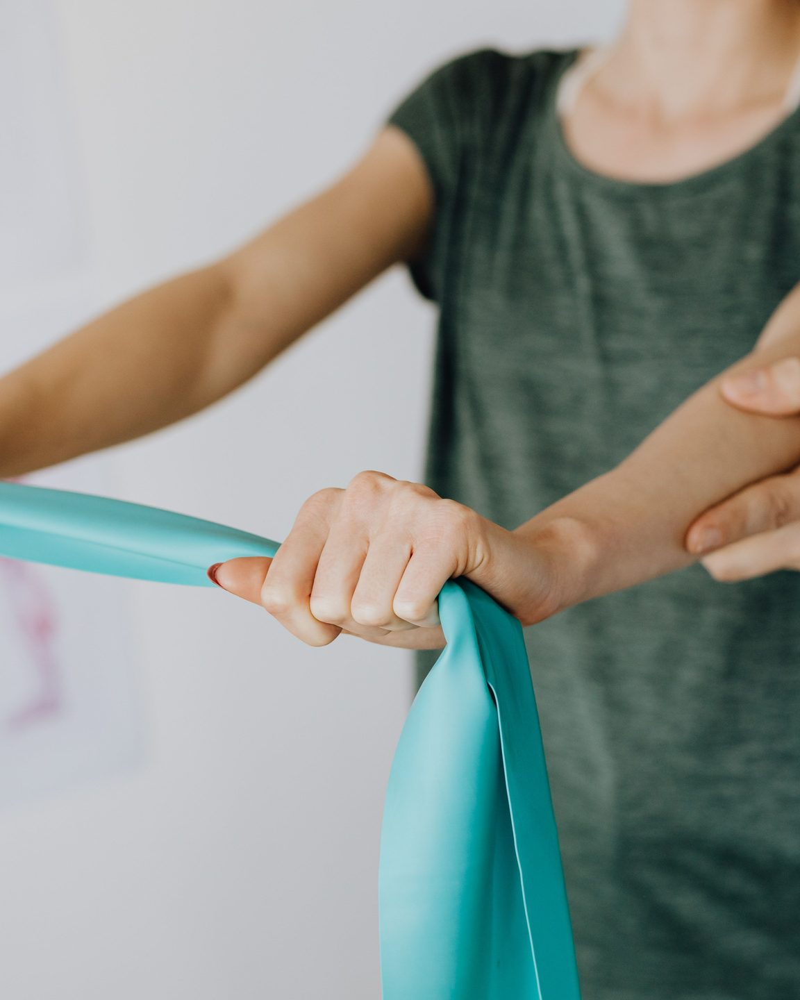

Fisioterapia individuale a Potenza
Ritrovare fiducia nel movimento, un passo alla volta.
Studio Movimento è uno spazio dedicato agli adulti che incontrano rigidità, limitazioni nei movimenti o difficoltà nel tornare alle attività quotidiane dopo un infortunio o un periodo di ridotta attività.
Ogni percorso parte dall’ascolto della persona, da una valutazione individuale e da obiettivi collegati alla vita di tutti i giorni.
Studio Movimento è un concept project creato a scopo di portfolio. Lo studio e i contatti rappresentati nel sito non sono reali.

Quando rivolgersi
Quando il movimento diventa più difficile
Una limitazione può influire sul lavoro, sul riposo e sulle attività più semplici della giornata. Una prima valutazione serve a comprendere la situazione e a individuare i passi più appropriati.
-
Rigidità nei movimenti
Quando muovere il collo, la schiena, una spalla o un’altra articolazione risulta meno naturale rispetto al solito.
-
Disagio durante il lavoro sedentario
Quando molte ore alla scrivania rendono più difficile mantenere una posizione confortevole o continuare le normali attività.
-
Ripresa dopo un infortunio
Quando, dopo gli accertamenti necessari, è il momento di tornare gradualmente ai movimenti e alle attività quotidiane.
-
Ritorno all’attività dopo una pausa
Quando un periodo di inattività, riposo o cambiamento delle abitudini ha ridotto la sicurezza e la continuità nel movimento.
-
Timore di riprendere a muoversi
Quando la preoccupazione di sentire nuovamente dolore o disagio rende difficile capire da dove iniziare.
Queste informazioni non sostituiscono una valutazione medica o fisioterapica e non permettono di formulare una diagnosi online.
Servizi
Un supporto individuale per il movimento quotidiano
Gli incontri vengono organizzati in base alla situazione della persona, alle sue esigenze e alle attività che desidera affrontare con maggiore consapevolezza.
-
Prima valutazione fisioterapica
Un primo incontro per parlare del motivo della richiesta, osservare il movimento e comprendere in che modo la difficoltà influisce sulla vita quotidiana.
Al termine vengono spiegate le osservazioni emerse e gli eventuali passi successivi.
-
Fisioterapia individuale
Incontri individuali dedicati al movimento, alle limitazioni funzionali e agli obiettivi concordati con la persona.
Ogni attività viene spiegata in modo comprensibile e adattata progressivamente.
-
Recupero del movimento
Un percorso rivolto a chi desidera tornare gradualmente al lavoro, alle passeggiate, agli impegni quotidiani o a una normale attività fisica dopo una pausa o un infortunio già valutato.
-
Esercizi e indicazioni personalizzate
Esercizi selezionati in base alle possibilità della persona, accompagnati da indicazioni chiare per una corretta esecuzione e per una gestione più consapevole delle attività quotidiane.
Il nostro approccio
Un percorso costruito intorno alla persona
Non esiste un percorso identico per tutti. Il lavoro parte dalle esigenze concrete della persona e da ciò che desidera tornare a fare nella vita quotidiana.

-
Prima capire la situazione
Il primo passo è ascoltare il motivo della richiesta e comprendere quali movimenti o attività risultano più difficili.
-
Spiegare con chiarezza
Ogni osservazione, esercizio e proposta viene spiegata con parole comprensibili, così che la persona possa partecipare in modo consapevole.
-
Procedere con gradualità
Il carico e la complessità vengono adattati nel tempo, senza forzare i passaggi e senza promettere risultati immediati.
-
Favorire la partecipazione attiva
La persona non riceve soltanto un trattamento, ma partecipa al percorso e acquisisce indicazioni utili per gestire meglio il movimento nella quotidianità.
Il professionista
Ascolto, chiarezza e attenzione al movimento
[Nome del fisioterapista] lavora individualmente con adulti che desiderano comprendere meglio una limitazione e tornare gradualmente alle attività della vita quotidiana.
Il suo approccio mette al centro il dialogo, la valutazione del movimento e la definizione di obiettivi realistici e comprensibili.
Durante gli incontri, ogni proposta viene spiegata prima di essere eseguita. La persona può fare domande, esprimere dubbi e partecipare alle decisioni sul percorso.
Il professionista presentato in questa pagina è un personaggio fittizio creato esclusivamente per questo concept project.
Prima visita
Come funziona il primo incontro
Sapere cosa aspettarsi aiuta ad affrontare il primo contatto con maggiore tranquillità.
-
Invia una richiesta
Compila il modulo dimostrativo oppure utilizza il numero di telefono indicato nel sito. L’invio del modulo non rappresenta una prenotazione confermata.
-
Concorda il momento dell’incontro
Dopo il primo contatto vengono chiarite le informazioni organizzative e viene concordato un possibile appuntamento.
-
Racconta la tua situazione
Durante l’incontro vengono approfonditi il motivo della richiesta, le attività che risultano difficili e gli obiettivi collegati alla vita quotidiana.
-
Valuta i prossimi passi
Al termine vengono spiegate le osservazioni emerse e si valuta se sia opportuno proseguire con un percorso fisioterapico o richiedere ulteriori approfondimenti.
Informazioni pratiche
Dove e quando
-
Sede
Potenza
L’indirizzo viene comunicato al momento della conferma dell’appuntamento.
-
Modalità
Solo su appuntamento
-
Orari di contatto
- Dal lunedì al venerdì
- 09:00–19:00
- Sabato e domenica
- Chiuso
-
Telefono dimostrativo
Email dimostrativa
Il numero di telefono e l’indirizzo email sono dati dimostrativi e non consentono di contattare un professionista reale.
Domande frequenti
Prima di contattarci
-
È necessaria una prescrizione medica?
Dipende dal tipo di percorso e dalla situazione personale. Prima dell’appuntamento viene chiarito se sia utile portare una prescrizione o altra documentazione già disponibile.
In presenza di un trauma recente, sintomi importanti o dubbi sulla diagnosi può essere necessario rivolgersi prima a un medico.
-
Che cosa succede durante la prima visita?
La prima visita comprende un colloquio, la raccolta delle informazioni utili e una valutazione del movimento in relazione alle difficoltà quotidiane.
Al termine vengono spiegate le osservazioni e gli eventuali passi successivi.
-
Quanto dura un incontro?
La durata viene comunicata al momento della conferma. La prima visita può richiedere più tempo rispetto agli incontri successivi perché comprende il colloquio iniziale e la valutazione.
-
Posso rivolgermi allo studio dopo un infortunio?
È possibile richiedere un primo contatto quando l’infortunio è già stato valutato oppure quando sono disponibili le indicazioni necessarie per iniziare un percorso fisioterapico.
Il sito non permette di valutare a distanza la gravità di un infortunio.
-
Che cosa devo portare?
È consigliabile indossare abiti comodi. Se possiedi già prescrizioni o documenti utili, puoi portarli direttamente all’incontro.
Non inviare documenti sanitari attraverso il modulo del sito.
-
Come viene concordato l’appuntamento?
Dopo la richiesta, il professionista contatta la persona attraverso il canale selezionato e propone una possibile disponibilità.
Il modulo non effettua una prenotazione automatica.
-
Posso inviare referti o informazioni mediche attraverso il modulo?
No. Il modulo serve esclusivamente a richiedere un contatto.
Non inserire diagnosi, referti, fotografie, informazioni sullo stato di salute o altri dati sanitari.
-
Come posso spostare o annullare un appuntamento?
È possibile utilizzare il telefono o l’email indicati al momento della conferma e avvisare lo studio appena possibile.
Contatti
Richiedi una prima valutazione
Utilizza il modulo per indicare come preferisci essere contattato. Non inserire diagnosi, referti o altre informazioni sanitarie.
L’invio del modulo non conferma un appuntamento e non sostituisce una consulenza medica.
Questo modulo funziona esclusivamente in modalità dimostrativa. I dati inseriti non vengono trasmessi né salvati.